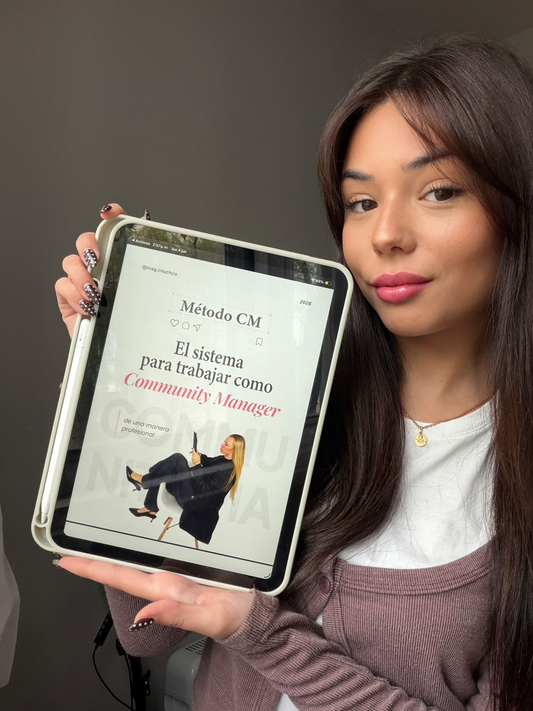

Resultados Reales.
Lo que dicen los alumnos en redes
★★★★★
"Pasé de publicar por publicar a entender qué necesita cada marca para vender."

@Mati_cm
★★★★★
"Logré que mi primera campaña fuera rentable y mis clientes están felices."

@Zoe_cm ★
★★★★★
"El calendario me salvó. Ahora todo mi contenido se ve súper profesional."

@Valen_cm